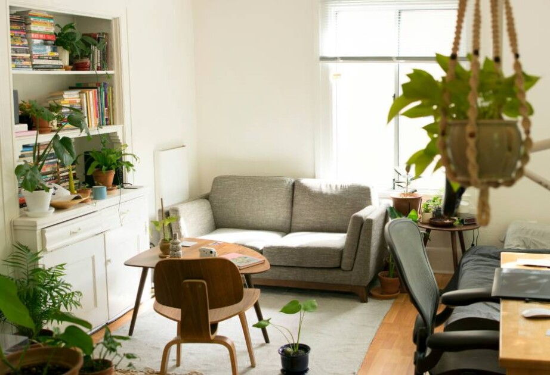
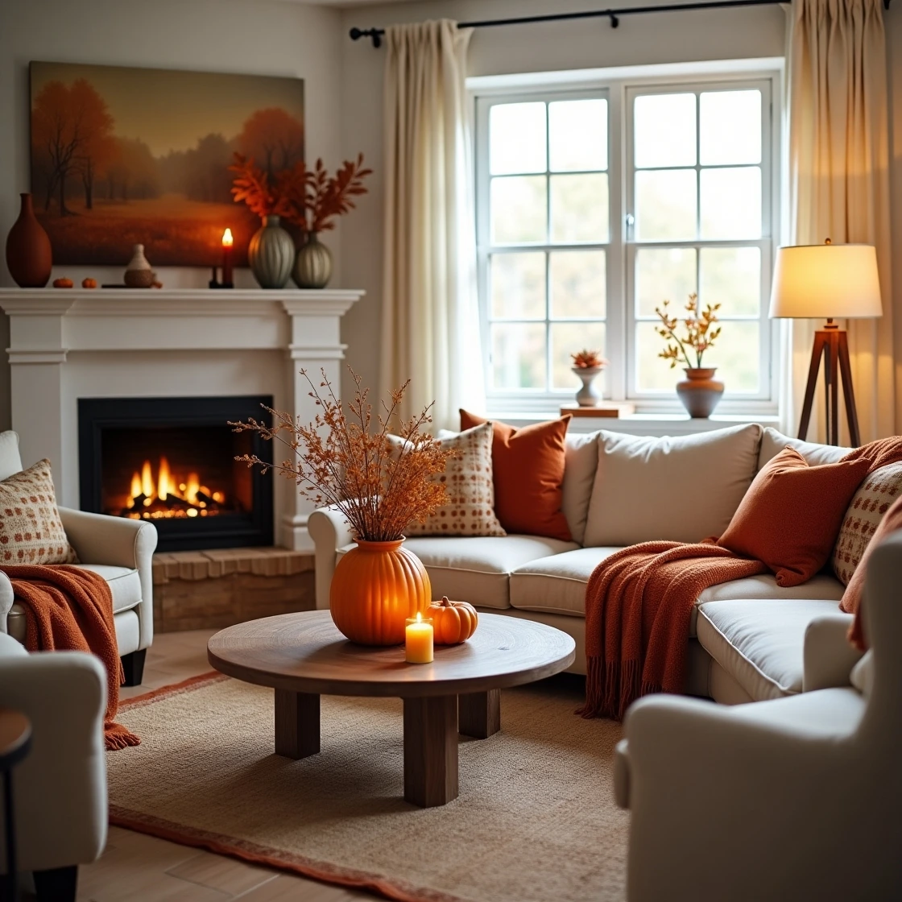
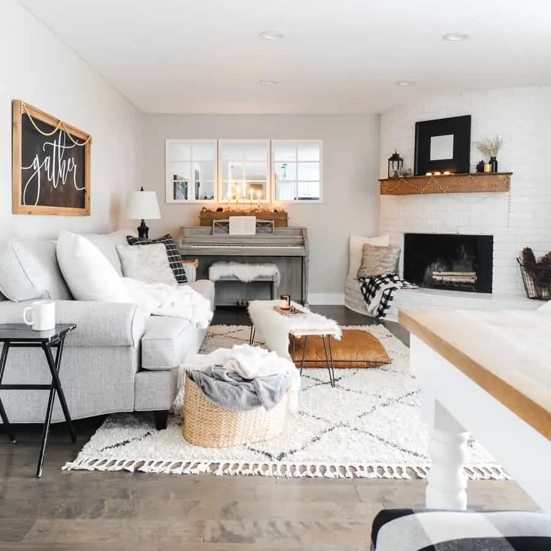

Jan 2026
There’s something powerful about aligning your home and daily habits with the rhythm of the seasons. Each shift in weather brings new colors, textures, and moods—offering the perfect excuse to reset your space and spark creativity in your life.
Spring: Fresh Starts & Light Energy
Spring is all about renewal. After months of heaviness, your space should feel airy, bright, and alive again.

- Home Decor Ideas
- Swap heavy textiles for light cotton or linen.
- Add fresh flowers (tulips, daffodils, eucalyptus)
- Use pastel tones and soft greens
- Open windows often—let nature in
- Creative Lifestyle Inspiration
- Start a journaling habit
- Try a small DIY project (like painting pots)
- Rearrange furniture for a fresh perspective
Summer: Vibrant, Playful & Relaxed
Summer invites bold colors and easy living. Your home should feel like a mini escape.

- Home Decor Ideas
- Add bright cushions and throws (yellows, blues, corals)
- Incorporate natural materials like rattan and bamboo
- Create an outdoor-inspired corner (even indoors!)
- Creative Lifestyle Inspiration
- Host casual gatherings or picnics
- Try photography or sketching outdoors
- Experiment with colorful recipes or drinks
Autumn: Warmth & Cozy Layers
As the air cools, your home becomes a sanctuary. Think texture, warmth, and comfort.

- Home Decor Ideas
- Layer blankets, rugs, and cushions
- Use earthy tones (rust, brown, deep orange)
- Add candles and soft lighting
- Creative Lifestyle Inspiration
- Bake seasonal treats
- Start a reading corner
- Try crafts like knitting or scrapbooking
Winter: Calm, Minimal & Magical
Winter is a time for stillness, reflection, and simple beauty.

- Home Decor Ideas
- Use neutral tones (white, beige, soft gray)
- Add fairy lights or warm lamps
- Keep spaces uncluttered and peaceful
- Creative Lifestyle Inspiration
- Practice slow living (tea, journaling, quiet evenings)
- Try creative writing or vision planning
- Focus on comfort rituals